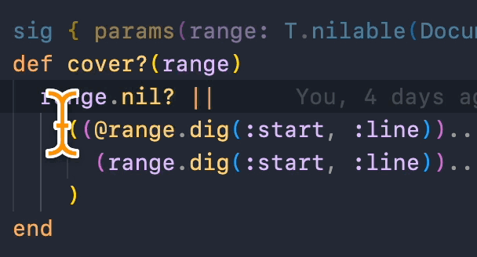

class RubyLsp::Requests::CodeActionResolve

The code action resolve request is used to to resolve the edit field for a given code action, if it is not already provided in the textDocument/codeAction response. We can use it for scenarios that require more computation such as refactoring.
Example: Extract to variable¶ ↑
# Before: 1 + 1 # Select the text and use Refactor: Extract Variable # After: new_variable = 1 + 1 new_variable
Constants
- NEW_VARIABLE_NAME
Public Class Methods
new(document, code_action)
click to toggle source
Calls superclass method
RubyLsp::Requests::BaseRequest::new
# File lib/ruby_lsp/requests/code_action_resolve.rb, line 38 def initialize(document, code_action) super(document) @code_action = code_action end
Public Instance Methods
run()
click to toggle source
# File lib/ruby_lsp/requests/code_action_resolve.rb, line 45 def run source_range = @code_action.dig(:data, :range) return Error::EmptySelection if source_range[:start] == source_range[:end] return Error::InvalidTargetRange if @document.syntax_error? scanner = @document.create_scanner start_index = scanner.find_char_position(source_range[:start]) end_index = scanner.find_char_position(source_range[:end]) extracted_source = T.must(@document.source[start_index...end_index]) # Find the closest statements node, so that we place the refactor in a valid position closest_statements, parent_statements = @document .locate(T.must(@document.tree), start_index, node_types: [SyntaxTree::Statements]) return Error::InvalidTargetRange if closest_statements.nil? # Find the node with the end line closest to the requested position, so that we can place the refactor # immediately after that closest node closest_node = closest_statements.child_nodes.compact.min_by do |node| distance = source_range.dig(:start, :line) - (node.location.end_line - 1) distance <= 0 ? Float::INFINITY : distance end # Find the parent expression of the closest node parent_expression = parent_statements.child_nodes.compact.find do |node| loc = node.location loc.start_line - 1 <= source_range.dig(:start, :line) && loc.end_line - 1 >= source_range.dig(:end, :line) end if parent_statements closest_node_loc = closest_node.location # If the parent expression is a single line block, then we have to extract it inside of the oneline block if parent_expression.is_a?(SyntaxTree::MethodAddBlock) && parent_expression.location.start_line == parent_expression.location.end_line variable_source = " #{NEW_VARIABLE_NAME} = #{extracted_source};" character = source_range.dig(:start, :character) - 1 target_range = { start: { line: closest_node_loc.end_line - 1, character: character }, end: { line: closest_node_loc.end_line - 1, character: character }, } else # If the closest node covers the requested location, then we're extracting a statement nested inside of it. In # that case, we want to place the extraction at the start of the closest node (one line above). Otherwise, we # want to place the extract right below the closest node if closest_node_loc.start_line - 1 <= source_range.dig( :start, :line, ) && closest_node_loc.end_line - 1 >= source_range.dig(:end, :line) indentation_line = closest_node_loc.start_line - 1 target_line = indentation_line else target_line = closest_node_loc.end_line indentation_line = closest_node_loc.end_line - 1 end lines = @document.source.lines indentation = T.must(T.must(lines[indentation_line])[/\A */]).size target_range = { start: { line: target_line, character: indentation }, end: { line: target_line, character: indentation }, } variable_source = if T.must(lines[target_line]).strip.empty? "\n#{" " * indentation}#{NEW_VARIABLE_NAME} = #{extracted_source}" else "#{NEW_VARIABLE_NAME} = #{extracted_source}\n#{" " * indentation}" end end Interface::CodeAction.new( title: "Refactor: Extract Variable", edit: Interface::WorkspaceEdit.new( document_changes: [ Interface::TextDocumentEdit.new( text_document: Interface::OptionalVersionedTextDocumentIdentifier.new( uri: @code_action.dig(:data, :uri), version: nil, ), edits: [ create_text_edit(source_range, NEW_VARIABLE_NAME), create_text_edit(target_range, variable_source), ], ), ], ), ) end